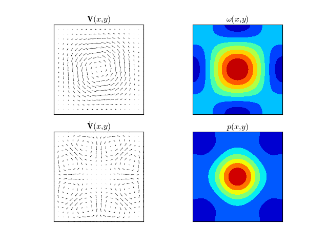
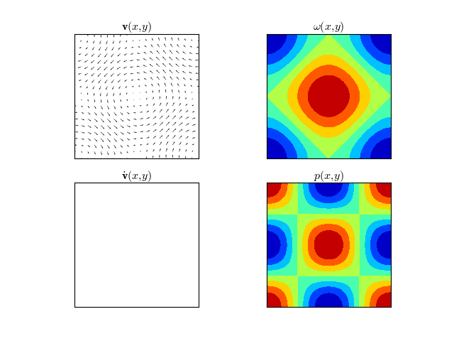
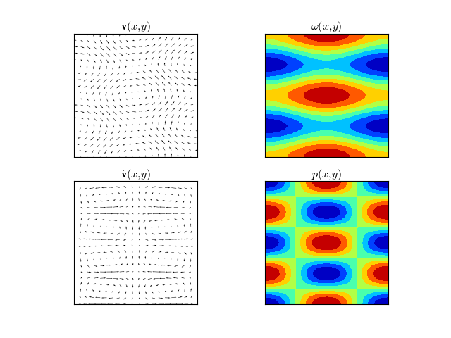
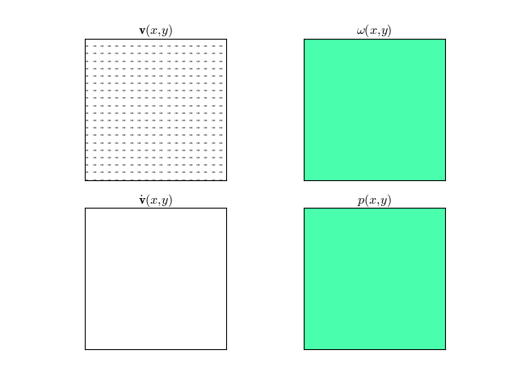

Sample Advection
We will obtain explicit analytical solutions for the Navier-Stokes equation in the two dimensional periodic domain \([-\pi, \pi] \times [-\pi, \pi]\).
\[\begin{split}\dot{\mathbf{v}}+\left(\mathbf{v}\cdot\nabla\right)\mathbf{v} & = & -\nabla p \\
\nabla\cdot\mathbf{v} & = & 0\end{split}\]
Applying the divergence operator on both sides of the first equation,
\[\begin{split}\nabla^2 p & = & - \nabla \cdot \left(\left(\mathbf{v}\cdot\nabla\right)\mathbf{v}\right) \\\end{split}\]
or in different notation
\[\begin{split}\Delta p & = & - \operatorname{div}(\operatorname{adv}(\mathbf{v}))\end{split}\]
which can be solved for the pressure by inverting the Laplacian operator. On a periodic
domain this can be done by applying the Fourier transform on both sides.
\[\begin{split}-(u^2 + v^2) \mathcal{F}(p) = - \mathcal{F} \left( \operatorname{div}(\operatorname{adv}(\mathbf{v})) \right)\\\end{split}\]
And the solution for the pressure is
\[p = \mathcal{F}^{-1} \left( \frac{-1}{u^2+v^2} \mathcal{F} (\operatorname{div}(\operatorname{adv}(\mathbf{v}))) \right)\]
from which it follows that the evolution in time is given by
\[\mathbf{\dot{v}} = -\nabla p - \left(\mathbf{v}\cdot\nabla\right)\mathbf{v}\]
Examples
Let us compute the vorticity \(\omega\), pressure \(p\), and the time derivative of the velocity
\(\mathbf{\dot{v}}\) for a prescribed initial velocity field \(\mathbf{v}(x,y)\).
Example 1
\[\begin{split}\mathbf{v}(x, y) & = & \left\{-2 \cos ^2\left(\frac{x}{2}\right) \sin (y),2 \sin (x) \cos ^2\left(\frac{y}{2}\right)\right\} \\
\omega (x,y) & = & 2 \cos (x) \cos (y)+\cos (x)+\cos (y) \\
p(x,y) & = & \frac{1}{20} (\cos (2 x) (4 \cos (y)+5)+4 \cos (x) (5 \cos (y)+\cos (2 y)+5)+5 (4 \cos (y)+\cos (2 y))) \\
\dot{\mathbf{v}}(x,y) & = & \left\{\frac{1}{5} \sin (x) (\cos (x) \cos (y)-\cos (2 y)),-\frac{1}{5} \sin (y) (\cos (2 x)-\cos (x) \cos (y))\right\}\end{split}\]
(Source code, png, hires.png, pdf)

Example 2
\[\begin{split}\mathbf{v}(x, y) & = & \{-\sin (y),\sin (x)\} \\
\omega (x,y) & = & \cos (x)+\cos (y) \\
p(x,y) & = & \cos (x) \cos (y) \\
\dot{\mathbf{v}}(x,y) & = & \{0,0\}\end{split}\]
(Source code, png, hires.png, pdf)

Example 3
\[\begin{split}\mathbf{v}(x, y) & = & \{-\sin (2y),\sin (x)\} \\
\omega (x,y) & = & \cos (x)+2 \cos (2 y)\\
p(x,y) & = & \frac{4}{5} \cos (x) \cos (2 y) \\
\dot{\mathbf{v}}(x,y) & = & \left\{\frac{6}{5} \sin (x) \cos (2 y),\frac{1}{5} (-3) \cos (x) \sin (2 y)\right\}\end{split}\]
(Source code, png, hires.png, pdf)

Example 4
\[\begin{split}\mathbf{v}(x, y) & = & \{1,0\} \\
\omega (x,y) & = & 0\\
p(x,y) & = & 0\\
\dot{\mathbf{v}}(x,y) & = & \{0,0\}\end{split}\]
(Source code, png, hires.png, pdf)

-
dec.symbolic.div(V)[source]
Compute the divergence of a vector field \(V(x,y)\).
-
dec.symbolic.vort(V)[source]
Compute the vorticity of a vector field \(V(x,y)\).
-
dec.symbolic.grad(f)[source]
Compute the gradient of a scalar field \(f(x,y)\).
{kind=link}
{kind=link}
{kind=link}
{kind=link}
{kind=link}
{kind=link}
{kind=link}
{kind=link}